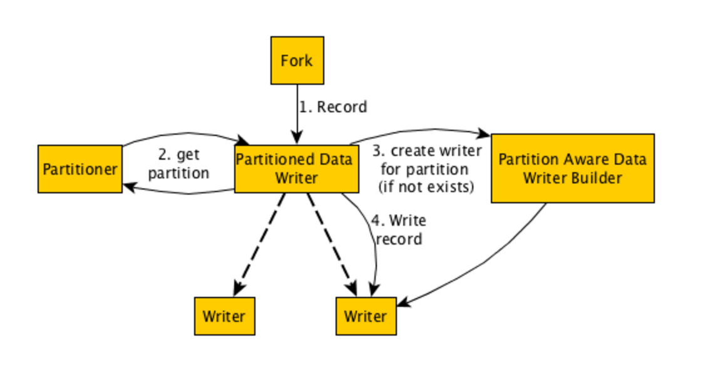

简介
Gobblin的writer功能还是很强大的, 该Stage负责将record写入临时文件中。由于项目的需要, 要求把每天的kafka日志按照日期按天输出到不同的目录。所以花了一天时间研究了Writer的源码和流程。
流程简述

- PartitionedDataWriter是整个过程的中心，它负责链接partitioner, PartitionAwareDataWriterBuilder,和writer.
- partitioner负责计算每一个record的partition.
- PartitionedDataWriter会在内存中创建LoadingCache,存放partition和writer的哈希映射，PartitionAwareDataWriterBuilder负责为那些还没存放在内存的partition创建writer。
- writer负责进行数据落地，即对同一partition的records调用其对应的writer写入数据。
注意 不管有没有需要partition, Gobblin的writer都是从PartitionedDataWriter开始,可以把不需要分区这种情况理解为只有一个分区。
接下来让我们根据源码来展开整个过程吧
PartitionedDataWriter
PartitionedDataWriter的初始化
Writer流程得从上一篇文章《Gobblin系列四之Runtime初探》上谈起。
Writer是在fork.class中processRecords方法通过buildWriterIfNotPresent创建的, 那么我们先从这里开始查看源码。
private void buildWriterIfNotPresent() throws IOException {
if (!this.writer.isPresent()) {
try {
this.writer = Optional.of(this.closer.register(buildWriter()));
} catch (SchemaConversionException sce) {
throw new IOException("Failed to build writer for fork " + this.index, sce);
}
}
}
/**
* Build a {@link gobblin.writer.DataWriter} for writing fetched data records.
*/
private DataWriter<Object> buildWriter()
throws IOException, SchemaConversionException {
DataWriterBuilder<Object, Object> builder = this.taskContext.getDataWriterBuilder(this.branches, this.index)
.writeTo(Destination.of(this.taskContext.getDestinationType(this.branches, this.index), this.taskState))
.writeInFormat(this.taskContext.getWriterOutputFormat(this.branches, this.index))
.withWriterId(this.taskId)
.withSchema(this.convertedSchema.orNull())
.withBranches(this.branches)
.forBranch(this.index);
return new PartitionedDataWriter<>(builder, this.taskContext.getTaskState());
}
从上述代码上看出, 一切的writer都开始于PartitionedDataWriter. 看看这个名字就可以看出gobblin默认就支持分区输出, 所以心里就放松了大半, 这个功能不需要花太大精力开发了。那么接下来就是分析PartitionedDataWriter这个class了。
PartitionedDataWriter的基类
DataWriter做为interface定义了实现writer所需要实现的方法, 而PartitionedDataWriter继承了DataWriter,
public interface DataWriter<D> extends Closeable {
/**
* Write a source data record in Avro format using the given converter.
*
* @param record data record to write
* @throws IOException if there is anything wrong writing the record
*/
public void write(D record)
throws IOException;
/**
* Commit the data written.
*
* @throws IOException if there is anything wrong committing the output
*/
public void commit()
throws IOException;
/**
* Cleanup context/resources.
*
* @throws IOException if there is anything wrong doing cleanup.
*/
public void cleanup()
throws IOException;
/**
* Get the number of records written.
*
* @return number of records written
*/
public long recordsWritten();
/**
* Get the number of bytes written.
*
* @return number of bytes written
*/
public long bytesWritten()
throws IOException;
}
PartitionedDataWriter的具体实现
PartitionedDataWriter他的代码还是比较简单的, 主要分为以下几个功能:
1.如果配置文件指定了writer.partitioner.class这个属性, 那么就创建这个partitioner的实例, 负责对record的分区。如果没有设置该属性,就意味着不需要进行分区,所以所有的record都分在一个partitioner中。
if (state.contains(ConfigurationKeys.WRITER_PARTITIONER_CLASS)) {
// 如果设置了writer.partitioner.class属性则根据该类创建partitioner
Preconditions.checkArgument(builder instanceof PartitionAwareDataWriterBuilder,
String.format("%s was specified but the writer %s does not support partitioning.",
ConfigurationKeys.WRITER_PARTITIONER_CLASS, builder.getClass().getCanonicalName()));
try {
this.shouldPartition = true;
// 创建dataWriterBuilder，后续生成dataWriter
this.builder = Optional.of(PartitionAwareDataWriterBuilder.class.cast(builder));
// 创建partitionner
this.partitioner = Optional.of(WriterPartitioner.class.cast(
ConstructorUtils.invokeConstructor(Class.forName(state.getProp(ConfigurationKeys.WRITER_PARTITIONER_CLASS)),
state, builder.getBranches(), builder.getBranch())));
} catch (ReflectiveOperationException roe) {
throw new IOException(roe);
}
} else {
// 如果没有设置了writer.partitioner.class, 则用NON_PARTITIONED_WRITER_KEY来表示只有一个partitioner
this.shouldPartition = false;
InstrumentedDataWriterDecorator<D> writer =
this.closer.register(new InstrumentedDataWriterDecorator<D>(builder.build(), state));
this.partitionWriters.put(NON_PARTITIONED_WRITER_KEY, writer);
this.partitioner = Optional.absent();
this.builder = Optional.absent();
}
所以需要在.pull配置writer.partitioner.class=gobblin.core.writer.partitioner.TimeBasedJsonWriterPartitioner来告诉gobblin按照TimeBasedJsonWriterPartitioner的规则进行partition
2.设置分区后, 在内存中以LoadingCache存放record的partition和其对应的writer.
private final LoadingCache<GenericRecord, DataWriter<D>> partitionWriters;
this.partitionWriters = CacheBuilder.newBuilder().build(new CacheLoader<GenericRecord, DataWriter<D>>() {
@Override
public DataWriter<D> load(final GenericRecord key) throws Exception {
return closer
.register(new InstrumentedPartitionedDataWriterDecorator<D>(createPartitionWriter(key), state, key));
}
});
上述代码实现了回调, 当partitionWriters.get(key)时, 如果没有key,则通过load来创建新的writer
3.为新的record partition创建writer。
private DataWriter<D> createPartitionWriter(GenericRecord partition) throws IOException {
if (!this.builder.isPresent()) {
throw new IOException("Writer builder not found. This is an error in the code.");
}
return this.builder.get().forPartition(partition).withWriterId(this.baseWriterId + "_" + this.writerIdSuffix++)
.build();
}
writer的创建分为两步:
- 根据partition, 创建PartitionAwareDataWriterBuilder, 即this.builder.get().forPartition(partition)返回partition对应的PartitionAwareDataWriterBuilder
- 调用PartitionAwareDataWriterBuilder的build创建DataWriter
public abstract class PartitionAwareDataWriterBuilder<S, D> extends DataWriterBuilder<S, D> {
protected Optional<GenericRecord> partition = Optional.absent();
public PartitionAwareDataWriterBuilder<S, D> forPartition(GenericRecord partition) {
this.partition = Optional.fromNullable(partition);
return this;
}
public abstract boolean validatePartitionSchema(Schema partitionSchema);
}
关于PartitionAwareDataWriterBuilder的介绍请看文档<Partitioned Writers > ,结合它来看本文更容易理解。
例如以下的simpleWriterBuilder:
public class SimpleDataWriterBuilder extends FsDataWriterBuilder<String, byte[]> {
@Override
public DataWriter<byte[]> build() throws IOException {
return new SimpleDataWriter(this, this.destination.getProperties());
}
}
所以需要.pull文件中指定writer.builder.class=gobblin.writer.SimpleDataWriterBuilder来告诉gobblin我需要通过SimpleDataWriter来进行datawriter
4.writer 和 commit
@Override
public void write(D record) throws IOException {
try {
// 使用partitioner来计算record的partition
GenericRecord partition =
this.shouldPartition ? this.partitioner.get().partitionForRecord(record) : NON_PARTITIONED_WRITER_KEY;
// 根据partition获取datawriter, 如果没有相应的datawriter则创建一个新的datawriter
DataWriter<D> writer = this.partitionWriters.get(partition);
// 调用datawriter的writer进行record的writer
writer.write(record);
} catch (ExecutionException ee) {
throw new IOException(ee);
}
}
@Override
public void commit() throws IOException {
int writersCommitted = 0;
for (Map.Entry<GenericRecord, DataWriter<D>> entry : this.partitionWriters.asMap().entrySet()) {
try {
// 对所有的datawriter调用commit
entry.getValue().commit();
writersCommitted++;
} catch (Throwable throwable) {
log.error(String.format("Failed to commit writer for partition %s.", entry.getKey()), throwable);
}
}
if (writersCommitted < this.partitionWriters.asMap().size()) {
throw new IOException("Failed to commit all writers.");
}
}
由此可见PartitionedDataWriter的writer和commit都是根据record的partition获取其对应的writer然后进行write和commit。 只不过在进行writer的时候如果还没该partition时会调用createPartitionWriter为该partition创建相应的writer。
至此关于PartitionedDataWriter的代码逻辑就介绍的差不多了。
partition
所有partition.class都继承自接口WriterPartitioner, 他实现两个功能:
public interface WriterPartitioner<D> {
// partition的结构,
public Schema partitionSchema();
// 根据record计算partition
public GenericRecord partitionForRecord(D record);
}
Gobblin默认支持时间为key的分区, 它实现了一个abstract class TimeBasedWriterPartitioner, 我们只需要根据自己的需要继承这个类做相应的开发就行了。比如我的record是json格式的, 那么我需要继承得到自己的实现类TimeBasedJsonWriterPartitioner.(Gobblin通过继承TimeBasedWriterPartitioner实现了TimeBasedAvroWriterPartitioner, 即对应record格式是avro的)
接下来让我们看看TimeBasedWriterPartitioner是怎么实现的以上两个方法的。
1.partitionForRecord方法
@Override
public GenericRecord partitionForRecord(D record) {
// 虚函数，需要我们自己写解析方法, 即根据record的格式解析出里面的时间字段。
long timestamp = getRecordTimestamp(record);
// 按照partitionSchema方法产生的Schema封装timestamp为GenericRecord
GenericRecord partition = new GenericData.Record(this.schema);
if (!Strings.isNullOrEmpty(this.writerPartitionPrefix)) {
partition.put(PREFIX, this.writerPartitionPrefix);
}
if (!Strings.isNullOrEmpty(this.writerPartitionSuffix)) {
partition.put(SUFFIX, this.writerPartitionSuffix);
}
if (this.timestampToPathFormatter.isPresent()) {
String partitionedPath = getPartitionedPath(timestamp);
partition.put(PARTITIONED_PATH, partitionedPath);
} else {
DateTime dateTime = new DateTime(timestamp, this.timeZone);
switch (this.granularity) {
case MINUTE:
partition.put(Granularity.MINUTE.toString(), dateTime.getMinuteOfHour());
case HOUR:
partition.put(Granularity.HOUR.toString(), dateTime.getHourOfDay());
case DAY:
partition.put(Granularity.DAY.toString(), dateTime.getDayOfMonth());
case MONTH:
partition.put(Granularity.MONTH.toString(), dateTime.getMonthOfYear());
case YEAR:
partition.put(Granularity.YEAR.toString(), dateTime.getYear());
}
}
return partition;
}
// 虚函数，需要我们自己写解析方法, 即根据record的格式解析出里面的时间字段。
public abstract long getRecordTimestamp(D record);
2.partitionSchema方法
this.schema = getSchema();
private Schema getSchema() {
if (this.timestampToPathFormatter.isPresent()) {
return getDateTimeFormatBasedSchema();
} else {
return getGranularityBasedSchema();
}
}
@Override
public Schema partitionSchema() {
return this.schema;
}
该段代码的意思就是根据writer.partition.granularity这个配置项来组合Schema, 比如我设置了writer.partition.granularity=DAY.就返回Granularity.DAY.toString()
最后附上我的实现类TimeBasedJsonWriterPartitioner怎么实现getRecordTimestamp
/**
* Check if the partition column value is present and is a Long object. Otherwise, use current system time.
*/
private long getRecordTimestamp(Optional<Object> writerPartitionColumnValue) {
return writerPartitionColumnValue.orNull() instanceof Long ? (Long) writerPartitionColumnValue.get()
: System.currentTimeMillis();
}
@Override
public long getRecordTimestamp(byte[] record) {
return getRecordTimestamp(getWriterPartitionColumnValue(record));
}
/**
* Retrieve the value of the partition column field specified by this.partitionColumns
*/
private Optional<Object> getWriterPartitionColumnValue(byte[] record){
if (!this.partitionColumns.isPresent()) {
return Optional.absent();
}
Optional<Object> fieldValue = Optional.absent();
for (String partitionColumn : this.partitionColumns.get()) {
JSONObject jsonObject = new JSONObject(new String(record));
fieldValue = Optional.of(jsonObject.get(partitionColumn));
if(fieldValue.isPresent()){
return fieldValue;
}
}
return fieldValue;
}
上述代码实现了以下功能:
- 根据配置writer.partition.columns获取字段名
- 解析json格式的record, 获取writer.partition.columns字段对应的时间戳
- 如果json解析失败则返回当前时间的时间戳。
比如我设置了writer.partition.columns=timestamp
我们需要writer.partition.timezone=Asia/Shanghai这个配置来指定时区,否则会出错。
DataWriter
Gobblin默认实现了SimpleDataWriter和AvroHDFSDataWriter, 它们都继承了FsDataWriter, FsDataWriter继承了DataWriter.
SimpleDataWriter将byte[]格式的record写入到文件系统(本地或者hdfs), 而AvroHDFSDataWriter则将avro格式的record写入到文件系统中.
以SimpleDataWriter为例, record被写入到stageFile目录中。
@Override
public void write(byte[] record) throws IOException {
Preconditions.checkNotNull(record);
byte[] toWrite = record;
if (this.recordDelimiter.isPresent()) {
toWrite = Arrays.copyOf(record, record.length + 1);
toWrite[toWrite.length - 1] = this.recordDelimiter.get();
}
if (this.prependSize) {
long recordSize = toWrite.length;
ByteBuffer buf = ByteBuffer.allocate(Longs.BYTES);
buf.putLong(recordSize);
toWrite = ArrayUtils.addAll(buf.array(), toWrite);
}
this.stagingFileOutputStream.write(toWrite);
this.bytesWritten += toWrite.length;
this.recordsWritten++;
}
每一个partition对应自己的dataWriter, 每一个dataWriter的作用范围也只能是自己的partition。
Publiser
到这一步为止, Gobblin已经将record按timestamp进行分区并按不同的目录写入到stageFile目录中。但是整个过程还没有完整。我们需要通过Publiser把数据publish到job－output上去。
刚好Gobblin已经帮我们实现了基于partition的publiser TimePartitionedDataPublisher.因此加入以下配置项即可:data.publisher.type=gobblin.publisher.TimePartitionedDataPublisher
总结
本文简单介绍了整个writer的流程, 尤其是partition writer。 并结合源码具体介绍了 PartitionedDataWriter, PartitionAwareDataWriterBuilder, partition, datawriter, publiser这几个重要模块。
同时介绍了我自己实现TimeBasedJsonWriterPartitioner的过程。
最后是完整的partition writer的配置
kafka.brokers=x15:9091
source.class=gobblin.source.extractor.extract.kafka.KafkaSimpleSource
extract.namespace=gobblin.extract.kafka
topic.whitelist=biz_stats
writer.builder.class=gobblin.writer.SimpleDataWriterBuilder
simple.writer.delimiter=\n
simple.writer.prepend.size=false
writer.file.path.type=tablename
writer.destination.type=HDFS
writer.output.format=csv
writer.partitioner.class=xiaomei.gobblin.core.writer.partitioner.TimeBasedJsonWriterPartitioner
writer.partition.level=date
writer.partition.pattern=YYYY/MM/dd
writer.partition.columns=timestamp
writer.partition.timezone=Asia/Shanghai
data.publisher.type=gobblin.publisher.TimePartitionedDataPublisher
本文完